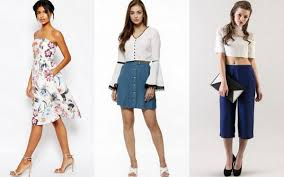
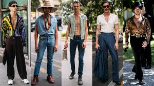
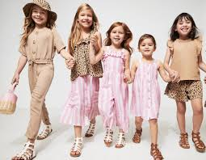

Fashion is something we deal with everyday. Even people who say they don’t care what they wear choose
clothes every morning that say a lot about them and how they feel that day.One certain thing in the fashion
world is change. We are constantly being bombarded with new fashion ideas from music, videos, books, and
television. Movies also have a big impact on what people wear. Ray-Ban sold more sunglasses after the movie
Men In Black. Sometimes a trend is world-wide. Back in the 1950s, teenagers everywhere dressed like Elvis Presley.
Who dictates fashion?
Musicians and other cultural icons have always influenced what we’re wearing, but so have political figures and
royalty. Newspapers and magazines report on what Hillary Clinton wears. The recent death of Diana, the Princess
of Wales, was a severe blow to the high fashion world, where her clothes were daily news.Even folks in the 1700s
pored over fashion magazines to see the latest styles. Women and dressmakers outside the French courtrelied on
sketches to see what was going on. The famous French King Louis XIV said that fashion is a mirror. Louis himself
was renowned for his style, which tended towards extravagant laces and velvets.
Clothes separate people into groups.
In high school, groups have names: “goths, skaters, preps, herbs.” Styles show who you are, but they also create
stereotypes and distance between groups. For instance, a businessman might look at a boy with green hair and multiple
piercings as a freak and outsider. But to another person, the boy is a strict conformist. He dresses a certain way
to deliver the message of rebellion and separation, but within that group, the look is uniform. Acceptance or rejection
of a style is a reaction to the society we live in.
Fashion is revealing. Clothes reveal what groups people are in.
Visit this for more info


